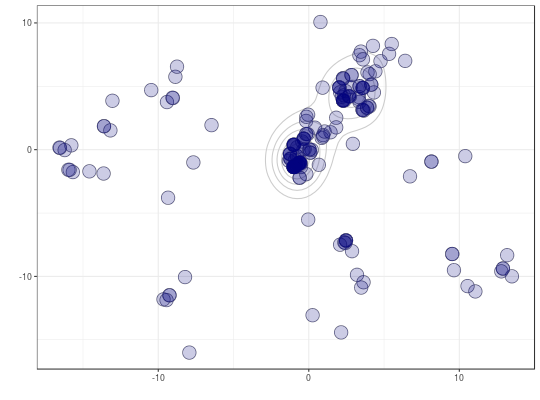

Compares phylogenetic trees and maps them into a small number of dimensions for easy visualisation and identification of clusters.
treespace(x, method = "treeVec", nf = NULL, return.tree.vectors = FALSE, ...)
treeVec (default) the Kendall Colijn metric vector
BHV the Billera, Holmes Vogtmann metric using dist.multiPhylo from package distory
KF the Kuhner Felsenstein metric (branch score distance) using KF.dist from package phangorn (Note: this considers the trees as unrooted)
RF the Robinson Foulds metric using RF.dist from package phangorn (Note: this considers the trees as unrooted and issues a corresponding warning)
wRF the weighted Robinson Foulds metric using wRF.dist from package phangorn (Note: this considers the trees as unrooted and issues a corresponding warning)
nNodes the Steel & Penny tip-tip path difference metric, (topological, ignoring branch lengths), using path.dist from package phangorn (Note: this considers the trees as unrooted)
patristic the Steel & Penny tip-tip path difference metric, using branch lengths, calling path.dist from package phangorn (Note: this considers the trees as unrooted)
others inherited from distTips in adephylo:
Abouheif: performs Abouheif's test. See Pavoine et al. (2008) and adephylo.
sumDD: sum of direct descendants of all nodes on the path, related to Abouheif's test. See adephylo.
FALSE.method.## generate list of trees x <- rmtree(10, 20) names(x) <- paste("tree", 1:10, sep = "") ## use treespace res <- treespace(x, nf=3) table.paint(as.matrix(res$D))scatter(res$pco)#> Error in s.label(dfxy = res$pco$li, xax = 1, yax = 2, plot = FALSE, storeData = TRUE, pos = -3): non convenient selection for dfxy (can not be converted to dataframe)data(woodmiceTrees) woodmiceDists <- treespace(woodmiceTrees,nf=3) plot(woodmiceDists$pco$li[,1],woodmiceDists$pco$li[,2])woodmicedf <- woodmiceDists$pco$li if(require(ggplot2)){ woodmiceplot <- ggplot(woodmicedf, aes(x=A1, y=A2)) # create plot woodmiceplot + geom_density2d(colour="gray80") + # contour lines geom_point(size=6, shape=1, colour="gray50") + # grey edges geom_point(size=6, alpha=0.2, colour="navy") + # transparent blue points xlab("") + ylab("") + theme_bw(base_family="") # remove axis labels and grey background }## Not run: ------------------------------------ # if(require(rgl)){ # plot3d(woodmicedf[,1], woodmicedf[,2], woodmicedf[,3], type="s", size=1.5, # col="navy", alpha=0.5, xlab="", ylab="", zlab="") # } ## ---------------------------------------------